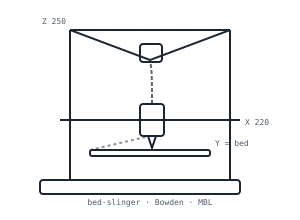

Ender 3 Pro
univerzální tahoun · základ dílny
| Typ | FDM, Bowden extruder |
|---|---|
| Tisková oblast | 220 × 220 × 250 mm |
| Vrstva | 0,08–0,32 mm |
| Tryska | 0,4 mm (vyměnitelná, kompatibilní s E3D) |
| Kinematika | kartézská, podložka jezdí v ose Y (bed slinger) |
| MBL | ano – mechanicky (tryska se dotkne podložky), 25 bodů (5 × 5) |
| Firmware | Marlin (s MBL, linear advance) |
| Max. teploty | tryska 260 °C · podložka 110 °C |
| Určení | PLA, PETG · dlouhé tisky |
MBL – mesh bed leveling
Před tiskem sonduje tryska výšku podložky v mřížce 5 × 5 bodů – u Enderu mechanicky (tryska se v každém bodě lehce dotkne podložky, Z-stop ji zaznamená). Firmware z toho sestaví mapu výšek a při tisku mezi body dopočítává (interpoluje), takže tryska drží stejnou výšku nad podložkou i na „křivé“ desce. V praxi se první vrstva přichytí po celé ploše bez ručního ladění s papírkem.
Role v dílně
Nejuniverzálnější stroj pro zakázkové tisky – od náhradních dílů po série. Po úpravách (nová PTFE trubička, doladěný extruder) tiskne spolehlivě i v nepřetržitém provozu.
Proč ne TPU
Bowden extruder tlačí filament dlouhou PTFE trubičkou – u flexibilního TPU se v ní mačká a prohýbá, tisk není spolehlivý. Flexibilní materiály proto tisknu na Voronu s direct drive extruderem, kde je motor přímo u trysky.